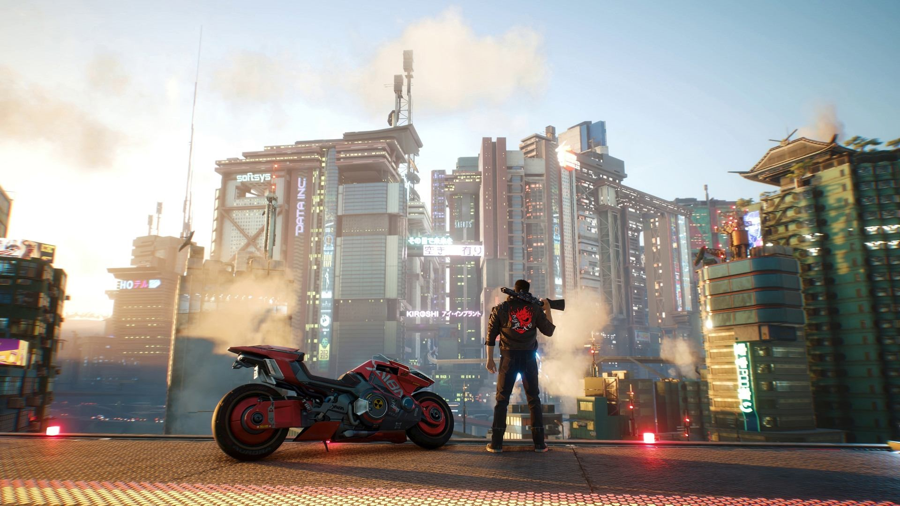

Always on the edge Ending:
Vypadá to, že jsi utekl. Avšak jsi teď cílem mafie po tom, co jsi se pokusil o atentát nejvlivnější osoby v Night City.. Užívej života dokud trvá, nebo se někam zašij. To, že tě někdy najdou a dopadnou, snad už víš..